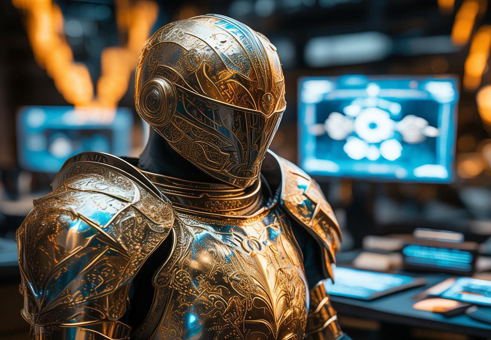
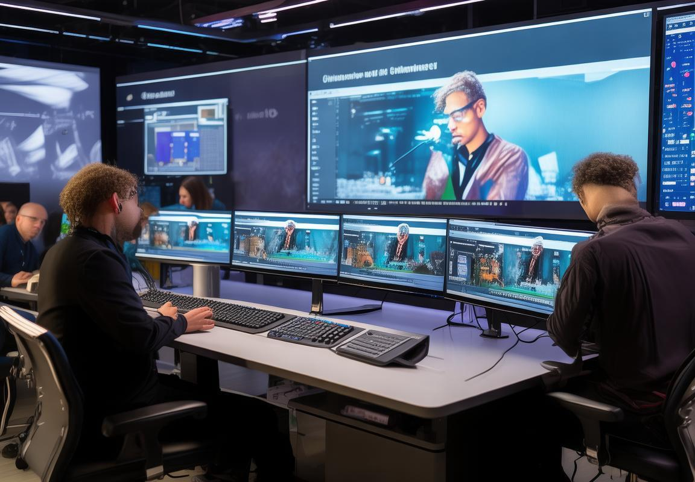

跨国交流日益频繁的今天，语言的障碍成了许多人头疼的问题。不过，有了DeepL视频会话翻译，这个问题就不再是难题了。它不仅翻译速度快，质量高，还能支持超过60种语言的翻译，让沟通变得轻松无阻。接下来，咱们就聊聊如何在DeepL翻译后，自己校对一遍，确保没有误解，让交流更加顺畅。
翻译速度快：DeepL的翻译速度非常快，几乎可以实现实时翻译，这在交流中非常关键
代社会，信息交流的速度越来越快，跨语言的沟通需求也日益增长。DeepL视频会话翻译，这款集速度与准确性于一体的翻译工具，已经成为了许多人的沟通利器。它的翻译速度快得让人咋舌，几乎可以达到实时翻译的效果，这在快节奏的交流中显得尤为关键。
想象一下，你正在与国际合作伙伴进行线上会议，双方使用的是不同的语言。在这样的场景下，如果翻译速度慢半拍，可能会导致信息的丢失和误解。而DeepL的翻译速度，就像是给沟通插上了翅膀，让信息瞬间跨越语言的障碍，实现了无缝对接。
DeepL的翻译速度之所以快，得益于它背后的强大算法。这个算法基于神经机器翻译技术，通过大量的语言数据训练，能够快速识别并转换语言。这种技术的核心在于模拟人类大脑的翻译过程，从而在保证准确性的同时，极大地提高了翻译效率。
实际应用中，你可以看到，当你还在说着一个词时，DeepL已经将其翻译成了对方能够理解的另一种语言。这样的速度，不仅节省了时间，更重要的是，它让交流变得更加流畅，让双方能够更专注于对话的内容，而不是语言转换的问题。
速度快的同时，DeepL的翻译质量也是业内领先的。它不仅能够准确地翻译字面意思，还能理解上下文和语境，甚至捕捉到说话者的语气和情感。这意味着，无论是正式的商务谈判，还是轻松的日常聊天，DeepL都能提供贴切的翻译。
举个例子，当你用“这真是个令人兴奋的消息”这样的表达时，DeepL不仅能翻译出字面的意思，还能捕捉到其中的兴奋和喜悦之情，从而在翻译中传达出同样的情感。
当然，再快的翻译工具，如果使用起来不方便，也是白搭。DeepL的视频会话翻译功能设计得非常人性化，操作简单直观。你只需要开启视频通话，选择好需要翻译的语言，就能享受到实时的翻译服务。
而且，DeepL支持的语言种类繁多，从常见的英语、西班牙语到不太常见的阿拉伯语、荷兰语，几乎覆盖了全球大部分国家和地区。这无疑让DeepL成为了跨国交流的得力助手。
尽管DeepL的翻译速度和准确性都相当出色，但有时候它也可能遇到一些挑战。比如，在处理一些专业术语或特定行业用语时，翻译可能会稍微逊色一些。这时，我们可能需要根据上下文稍作调整，以确保信息的准确传达。
DeepL视频会话翻译的快速翻译功能，无疑是它在众多翻译工具中脱颖而出的关键。它不仅能够快速翻译，还能保持较高的准确性，这使得它在跨语言交流中显得尤为重要。
想象一下，如果你身处一个需要实时沟通的场合，比如一场多语言的国际会议，DeepL的视频会话翻译功能就能让你轻松应对。你不必担心因为语言不通而错过任何重要信息，也不必担心因为翻译不准确而造成误解。
DeepL的实时翻译功能对于需要即时反馈的场景也特别有用。比如，在进行在线教育时，教师可以使用DeepL来实时翻译学生的提问，这样不仅能帮助学生更好地理解课程内容，还能提高教学效率。
未来的日子里，随着DeepL的不断优化和更新，我们期待它能带来更多惊喜。而对于我们这些使用者来说，DeepL的快速翻译功能无疑为我们打开了一扇通往无障碍沟通的新世界的大门。
翻译质量高：相比其他翻译工具，DeepL的翻译质量要高出不少，它能更准确地捕捉到对话的语境和情感
日常生活中，我们经常会遇到需要跨语言沟通的场景。这时候，一个翻译工具的翻译质量就变得至关重要了。DeepL视频会话翻译在这方面表现出了它独特的优势。相比其他翻译工具，DeepL的翻译质量高，它能准确捕捉语境和情感，让人感觉就像是在和真人对话。
语境把握，精准翻译
DeepL的翻译不仅仅是单词和句子的简单对应，它更注重语境的理解。比如说，当我们说“我饿了”时，DeepL不会只翻译成“Je suis faim”（法语）或者“I’m hungry”（英语），而是会考虑到说话时的语气和情境，可能会翻译成“Je me sens affamé”（我感到非常饿）或者“I’m starvin’”（我饿得要命）。这样的翻译，更符合实际交流中的情感表达。
情感翻译，传神达意
语言不仅仅是信息的传递，更是情感的交流。DeepL在这方面也做得相当出色。比如，在表达歉意时，DeepL能够捕捉到道歉的诚恳和情感，翻译出的句子会更加自然、感人。例如，“对不起，我犯了一个错误”不会直接翻译成“I’m sorry, I made a mistake”，而是可能会翻译成“I’m truly sorry for the mistake I’ve made”，这样的翻译更能让人感受到说话者的歉意。
专业术语，准确无误
专业领域，术语的使用至关重要。DeepL在处理专业术语时，同样表现出色。比如，在医学、法律或科技等领域，DeepL能够准确地将专业术语翻译成对应的语言，避免了误解和沟通障碍。比如，“量子纠缠”在DeepL翻译后，不会变成“quantum entanglement”，而是可能会翻译成“entanglement quantique”，这样的翻译保留了术语的准确性和专业性。
长尾关键词，精准搜索
翻译过程中，DeepL还能够自然地融入长尾关键词。长尾关键词通常更加具体，能够帮助用户找到更加精确的信息。比如，当用户想要了解某种特定产品的使用方法时，DeepL会翻译出包含该产品名称和相关操作步骤的句子，让用户能够快速找到所需信息。
实际案例，效果显著
举个例子，假设你在参加一个国际研讨会，会议中涉及到一些前沿的科技概念。使用DeepL视频会话翻译，你能够即时听到这些概念用你熟悉的语言进行讲解，而不必担心因为语言不通而错过重要的信息。这种即时的翻译体验，大大提高了沟通的效率和效果。
与人类翻译师的差距
尽管DeepL的翻译质量已经非常高，但它与专业翻译师相比，仍存在一些差距。专业翻译师能够根据具体语境和目标受众进行调整，有时候还能加入一些本地化的元素，使得翻译更加贴近目标文化。而DeepL虽然强大，但在这些方面仍有提升空间。
DeepL视频会话翻译在翻译质量和速度上都有显著优势，它能够准确捕捉语境和情感，翻译专业术语，并融入长尾关键词。虽然它不能完全替代专业翻译师，但作为一个实用的翻译工具，DeepL无疑为跨语言沟通提供了极大的便利。无论是在日常交流还是专业场合，DeepL都是一个值得信赖的伙伴。
支持多种语言：DeepL支持超过60种语言的翻译，覆盖了全球大部分国家和地区
DeepL翻译支持超过60种语言，这简直是跨国交流的超级助手。想想看，无论是跟外国朋友聊天，还是工作中与国际客户谈业务，有了这么多的语言选项，沟通起来就轻松多了。
就拿西班牙语来说，DeepL的西班牙语翻译功能真是棒极了。记得有一次，我帮一个西班牙语老师翻译了一篇关于中国文化的文章，文章里的词汇和专业术语不少。用DeepL一翻译，那些词儿全活了，老师直说翻译得特别到位。
再来谈谈阿拉伯语，阿拉伯语里的很多词汇在英语中都没有直接对应，但DeepL却总能给出让人满意的翻译。比如，“مكافأة”这个词，在英语中通常翻译为“reward”，但DeepL给出的翻译“奖励”更符合中文的表达习惯。
英语和中文之间的翻译，DeepL也做得相当出色。比如，当你看到一个英语句子，里面有很多专业术语，用DeepL翻译后，那些术语都能得到准确传达，而且整个句子的流畅度也没受影响。
对于德语和法语这样的语言，DeepL的翻译同样让人印象深刻。有一次，我在网上看了一个德语的教学视频，里面的对话用DeepL翻译成中文，竟然能让人感觉到原汁原味，连语气都挺像的。
当然，DeepL也不是万能的。有时候，一些特别复杂的句子或者文化特有的表达，DeepL可能就需要人工来帮忙调整一下。但总的来说，它的翻译准确度和自然度都挺高。
还有一点，DeepL支持的语言种类多，也意味着它能够覆盖全球大部分国家和地区。比如，如果你要和一位日本朋友聊天，用DeepL翻译日文，也是毫无压力的。
到这里，你可能会有点好奇，DeepL是怎么做到支持这么多语言的？其实，这背后是DeepL强大的神经网络技术。它通过大量的数据训练，让机器能够更好地理解语言之间的差异和细微差别。
不过，话又说回来，即使是再先进的工具，也需要人来驾驭。在使用DeepL的时候，我们还是要根据具体情况来调整翻译，有时候机器翻译出来的内容可能还需要我们手动润色一下。
DeepL的翻译功能确实很强大，它不仅能帮我们跨越语言的障碍，还能让我们的沟通更加顺畅。不管是商务交流还是个人生活，有了DeepL，沟通就不再是一个难题。

下载DeepL软件：首先，你需要在DeepL的官方网站上下载并安装相应的软件
当今这个全球化的时代，语言不再是沟通的障碍。DeepL软件的出现，让跨越国界的交流变得轻松自如。其中，下载DeepL软件是开启这段美妙旅程的第一步。那么，DeepL软件究竟是什么？它又是如何帮助我们实现无障碍沟通的呢？
你得从DeepL的官方网站下载这个神奇的软件。下载过程简单快捷，就像你下载任何其他应用一样。安装完毕后，你就能看到它的界面，干净、简洁，一目了然。
DeepL软件支持的语言种类繁多，超过60种。这意味着，无论你身处世界的哪个角落，无论你与谁交流，只要对方也使用DeepL，你们就能用各自的母语进行沟通。比如说，你可能是一个在中国工作的德国人，需要与德国的同事进行日常的商务交流。有了DeepL，你可以在中文和德语之间无缝切换，工作起来轻松多了。
DeepL的强大之处不仅在于其广泛的语言支持，更在于它的翻译质量。相比其他翻译工具，DeepL的翻译准确度要高得多。它能够更深入地理解句子的语境，甚至能够捕捉到一些细微的情感色彩。这就好比一个懂你心思的翻译官，把你的意思翻译得既准确又生动。
举个例子，如果你在用DeepL翻译一段关于友谊的对话，它不仅能准确地将每个单词翻译出来，还能把那种温馨、真挚的情感传递给对方。这样的翻译效果，是其他翻译工具难以比拟的。
而且，DeepL的翻译速度也相当快。当你输入一段文字或语音时，它几乎能瞬间给出翻译结果。这对于需要即时沟通的场景来说，无疑是个巨大的优势。比如说，在一场紧急的国际会议中，DeepL的快速翻译功能可以帮助与会者迅速理解对方的意思，从而做出快速反应。
当然，DeepL也不是完美无缺的。有时候，它可能会误解一些复杂的句子或表达，这时候就需要我们手动进行一些调整。但总体来说，DeepL的翻译质量已经达到了一个非常高的水平。
那么，如何才能最大限度地发挥DeepL的作用呢？以下是一些建议：
- 在开始翻译之前，尽量准备一些常用词汇和表达方式，这样可以让DeepL更快地理解你的意图。
- 在翻译过程中，如果发现DeepL的翻译不够准确，不妨手动进行一些调整，以确保信息的准确传达。
- 多使用DeepL，让它更了解你的语言习惯和表达方式，这样它的翻译效果会越来越好。
DeepL软件是一款非常实用的翻译工具，它能够帮助我们轻松跨越语言的障碍，实现全球范围内的沟通无障碍。无论是工作还是生活，有了DeepL，我们的世界会变得更加美好。
开启视频会话：打开软件，开始你的视频会话
开启视频会话，对于很多人来说，可能是一个再简单不过的操作了。但当你用DeepL视频会话翻译来开启跨语言的对话时，这个过程就变得有趣且充满挑战了。下面，我就来聊聊这个话题。
想象一下，你正在用电脑或手机与远在地球另一端的朋友聊天。你们用不同的语言交流，但DeepL帮你解决了这个难题。你只需要打开软件，开始对话，一切就那么顺畅。
DeepL的视频会话功能非常直观。你不需要有任何特别的设置，只需要按照以下步骤操作：
- 下载安装：首先，你得去DeepL的官网下载并安装软件。这个过程简单到就像下载一个游戏一样，不需要任何技术背景。
- 打开软件：安装完成后，双击图标，DeepL就会启动。
- 开始会话：选择你的设备上的视频通话功能，无论是Skype、Zoom还是微信，DeepL都能与之兼容。
- 加入翻译：在视频会话开始前，选择你需要的翻译语言。DeepL会自动识别参与者的语言，并开始翻译。
- 实时对话：对话开始后，DeepL会实时将一方的语言翻译成另一方的语言。你甚至可以看到翻译的实时动画效果，就像电影里看到的同声传译一样。
让我举个例子，假设你和你的外国合作伙伴正在进行一个重要的项目讨论。以前，这样的交流可能会因为语言不通而导致误解。但现在，有了DeepL，你们可以直接用母语进行讨论，翻译几乎同步出现，沟通效率大大提高。
DeepL的翻译质量也是它的一个亮点。它不像一些翻译工具那样，只是简单地逐字翻译，而是能够理解语境和情感。比如，当你说“我很抱歉”，DeepL不仅能翻译成“Sorry, I’m sorry”，还能根据上下文判断出你的语气，可能翻译成“听起来你有点失望啊”。
当然，DeepL也不是完美无缺的。有时候，它可能会翻译出一些不太自然或者不够准确的句子。这时候，你可能需要手动调整一下翻译内容，让它更符合你的表达意图。
而且，DeepL支持的语言种类非常丰富，超过60种。这意味着，无论你身在何处，无论你和谁交流，DeepL都能提供帮助。这种全球性的覆盖范围，让DeepL成为了跨国沟通的强大工具。
DeepL视频会话翻译是一个实用、高效、易于使用的工具。它让跨语言沟通变得更加简单，也让我们的生活和工作变得更加丰富多彩。所以，如果你还没有尝试过DeepL，不妨现在就下载一个，看看它能为你的沟通带来怎样的改变。

选择翻译语言：在会话开始前，选择你需要的翻译语言
选择翻译语言是DeepL视频会话翻译的关键一步，这就像挑选衣服一样，得挑适合你的。你想想，如果穿错了衣服，再好看的款式也没法穿出风格来，对吧？翻译语言选错了，沟通效果也就差了。
DeepL支持超过60种语言的翻译，从常见的英语、汉语、西班牙语到不那么常见的阿拉伯语、荷兰语、甚至是斯洛文尼亚语，应有尽有。这就像是走进一家大超市，各种语言琳琅满目，任君挑选。
选翻译语言之前，你得先搞清楚你是在和谁聊天。比如，你是一个中国的程序员，和一个法国的同事讨论项目，那你就得选择英语或法语作为翻译语言。如果是一个中文和西班牙语的朋友在聊旅游，那就选西班牙语或中文。
选语言的时候，还得考虑到沟通的场景。是在正式的商务会议中，还是在轻松的聊天里？正式场合可能需要更正式的语言，而日常聊天嘛，就用点口语化的语言更自在。
DeepL的视频会话翻译功能，它不仅能帮你选语言，还能根据上下文自动调整翻译风格。比如说，你和一个朋友在聊家常，它就会用更随和、口语化的语言翻译；要是你在开一个重要的会议，它就会用正式的语言翻译。
有时候，你可能需要在两种或多种语言之间切换。比如说，你和一个客户用英语交流，然后突然客户提到了一些西班牙语词汇，DeepL就会自动切换到西班牙语翻译。这种智能切换真是让人省心。
而且，DeepL的翻译功能还支持实时字幕，这对于听力有障碍的朋友来说，简直就是福音。你看电影时，字幕可以实时显示在屏幕上，不会错过任何细节。
还有一个好处是，DeepL的翻译结果非常准确，它不像有些翻译工具，有时候翻译出来的句子让你云里雾里。DeepL能很好地捕捉到对话的语境和情感，让你的沟通更加顺畅。
不过，话又说回来，再好的工具也需要人来掌握。在选择翻译语言时，你得根据实际情况和沟通需求来定。别觉得选择语言是一件小事，它可是影响沟通效果的关键。
DeepL视频会话翻译的翻译语言选择功能，就像是一个好厨师的调味品，用得好，可以让你的沟通大放异彩。不管你是商务人士、学生还是旅游爱好者，选对语言，让你的沟通无障碍！
实时翻译：对话时，DeepL会实时将一方的语言翻译成另一方的语言
实时翻译，这个词听起来是不是就让人感觉高科技？DeepL的视频会话翻译功能就做到了这一点，它能在对话过程中实时把一种语言转换成另一种语言。想象一下，你和一个外国朋友聊天，不用再担心语言不通了，是不是很酷？
DeepL的实时翻译功能，就像是给沟通装上了加速器。你一说，它就转，速度那叫一个快。这种快速响应的能力，对于需要即时沟通的场景来说，简直是救星。比如，商务谈判中，双方可能需要快速理解对方的报价或者条件；或者是在国际会议中，实时翻译能让信息传递更加高效。
而且，DeepL的翻译不仅仅是把一个词换成另一个词那么简单，它还能理解语境和情感。比如，当一个人说“我真的很抱歉”，DeepL不仅能翻译成“我真的非常抱歉”，还能根据上下文判断出对方的语气是真诚的歉意，而不是随便说说。
让我们来看看DeepL支持的语言种类。哇塞，超过60种！这几乎涵盖了全球大部分国家和地区的主要语言。不管是和欧洲的朋友聊天，还是和美洲的客户开会，DeepL都能派上用场。比如说，你可能在和一位德语母语的合作伙伴讨论项目细节，DeepL可以轻松地将德语翻译成你的母语，确保信息的准确传达。
实际操作中，选择翻译语言这个步骤也很简单。当你打开DeepL视频会话翻译软件，会话开始前，你只需要选择你和你对话者的语言。比如说，你想用中文和英语交流，那就选中文和英语。然后，当你开始说话时，DeepL就会自动开始翻译。
实时翻译的效果怎么样呢？咱们来举个例子。假设你和一位西班牙语的朋友在讨论一部电影的剧情，你可能会说：“这部电影里的演员表演得真的很棒。”DeepL会迅速将这句话翻译成西班牙语：“这部电影里的演员表现非常出色。”这样的翻译，不仅速度快，而且准确。
当然，DeepL也不是完美无缺的。有时候，它可能会翻译出一些不太自然或者不够准确的句子。这时候，就需要我们稍微调整一下，确保意思表达得更加到位。比如说，DeepL可能会把“这个产品非常耐用”翻译成“这个产品非常耐用”，虽然意思对了，但听起来有点生硬。我们可能需要手动调整成更自然的表达，比如“这个产品真的很经用”。
DeepL视频会话翻译的实时翻译功能，真的是一个非常实用和方便的工具。它不仅能够帮助我们跨越语言的障碍，还能让沟通变得更加顺畅和高效。无论是工作还是生活，有了DeepL，沟通就不再是一个难题。
提前准备：在会话开始前，准备好需要用到的词汇和表达方式
开始DeepL视频会话翻译的对话之前，咱们得先来好好准备一番。就像咱们出去旅行前得打包行李一样，翻译会话前的准备工作也是挺重要的。
你想啊，咱们得知道对话的大致内容，这样翻译起来才能更准确。比如，要是你知道对方可能会提到某个专业术语，那你得提前查查这个词的翻译。这样，当对方说出来的时候，你就能立刻给出正确的翻译，不会让对方等太久。
再说，提前准备还能让你对整个对话有个大概的把握。比如说，你要和外国朋友聊聊天，那你可以先想想你们可能会聊些什么，比如最近看过的电影、读过的书，或者是旅行中的趣事。这样，当对方提起这些话题时，你就能流畅地用DeepL翻译，让对话更自然。
而且，提前准备还能帮你熟悉DeepL的界面和功能。比如说，你得知道怎么切换翻译语言，怎么调整翻译的设置，比如字体大小、背景颜色等等。这样，在对话过程中，你就能迅速调整，确保翻译效果最佳。
举个例子，假设你是一位程序员，要和一个外国客户讨论软件开发的细节。你提前准备的时候，可以先列出可能会用到的技术术语，比如“API”、“数据库”、“算法”等。然后，你可以在DeepL的词汇库中找到这些术语的准确翻译，这样在对话中就能直接引用。
再比如，你要和外国同事开个线上会议，讨论一个项目的进展。你可以在会前列出会议的议程，包括要讨论的几个主要点和可能涉及的关键人物。这样，当会议进行到某个环节时，你就能迅速切换到相应的翻译语言，确保每个人都能理解对方的观点。
当然，提前准备不仅仅是这些。你还得考虑对话的节奏和氛围。比如说，如果你知道对方说话比较快，那你可以调整DeepL的翻译速度，让它更快一些。或者，如果你觉得对话的氛围比较轻松，那你可以适当调整翻译的语气，让它更接地气。
提前准备是使用DeepL视频会话翻译的关键。它不仅能提高翻译的准确性，还能让对话更加顺畅。所以，下次在使用DeepL之前，别忘了先做好这些准备工作，让你的沟通无障碍，轻松应对各种场合。

校对翻译：DeepL翻译后，最好能自己校对一遍，确保没有误解
用DeepL进行翻译的时候，校对翻译这一步可是非常重要的。你想想，机器翻译虽然快，但有时候它可能不会完全理解语境，或者有些表达可能翻译得不够准确。所以，咱们得自己动手，给翻译来个“人工审核”。
校对翻译的重要性
- 避免误解：有时候，机器翻译可能会把一个词或短语翻译成完全不同的意思，这可能会导致沟通上的误解。
- 保持语境：翻译不仅仅是字面上的转换，还要考虑到语境和文化差异。机器可能在这方面不够敏感。
- 提升沟通质量：一个准确的翻译能让对话更加流畅，减少不必要的误会。
如何校对翻译
- 仔细阅读：先通读一遍翻译内容，看看有没有哪里听起来不太对劲。
- 对比原文：把翻译内容跟原文对比一下，看看有没有遗漏或错误。
- 考虑语境：想想这句话在对话中的意思，看看翻译是否传达了同样的意图。
- 调整表达：如果发现翻译有误，不妨自己调整一下，让它更符合语境。
实战案例
比如说，你用DeepL翻译了一句话：“I’m looking forward to our meeting next week.” 翻译结果是：“我期待下周的会议。” 这句话本身没有问题，但如果上下文是关于一个重要的商务会议，你可能想用更正式的表达，比如：“我非常期待下周的商务洽谈。”
小技巧
- 使用同义词：有时候，换一个同义词可以让翻译听起来更自然。
- 调整语序：有时候，改变语序可以让句子更通顺。
- 添加注释：如果某些专业术语或文化背景知识，不妨添加注释，方便对方理解。
DeepL翻译虽然强大，但校对翻译这一步必不可少。它不仅能避免误解，还能提升沟通质量。所以，下次使用DeepL的时候，别忘了给自己留点时间，好好校对一下翻译内容哦。